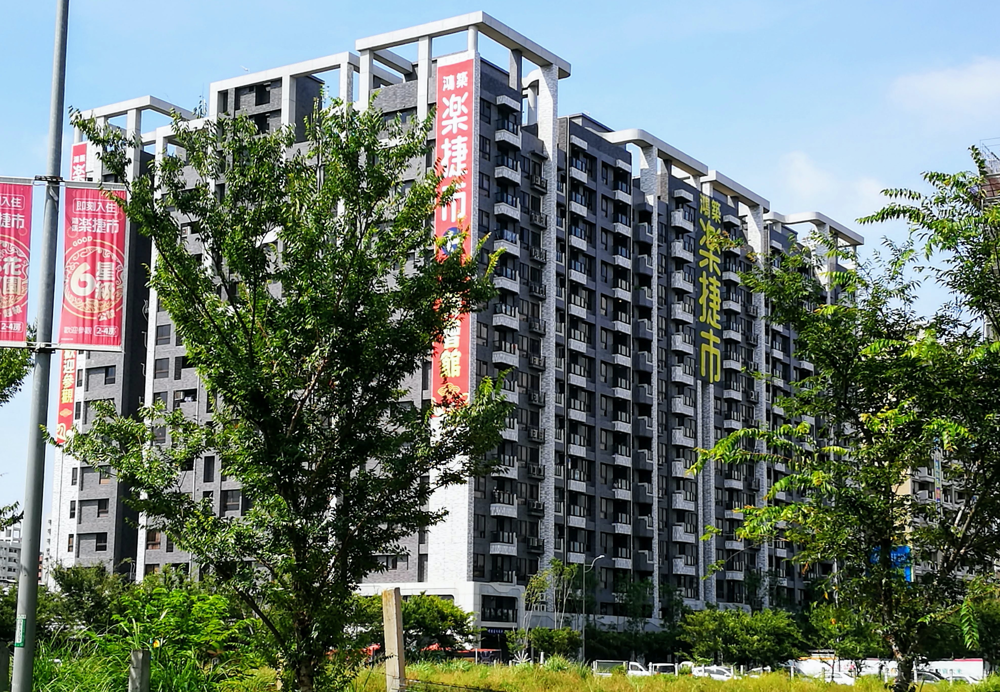

<!DOCTYPE html>
<html lang="en"><!-- InstanceBegin template="/Templates/AiCityB-01-Template01.dwt" codeOutsideHTMLIsLocked="false" -->

<head>
  <meta charset="UTF-8">
  <meta name="viewport" content="width=device-width, initial-scale=1.0">
  <meta http-equiv="X-UA-Compatible" content="ie=edge">

  <!-- Bootstrap 4 CSS 的 CDN -->
  <link rel="stylesheet" href="https://stackpath.bootstrapcdn.com/bootstrap/4.1.3/css/bootstrap.min.css"
    integrity="sha384-MCw98/SFnGE8fJT3GXwEOngsV7Zt27NXFoaoApmYm81iuXoPkFOJwJ8ERdknLPMO" crossorigin="anonymous">
  <!-- Fontawesom 的 CDN -->
  <link rel="stylesheet" href="https://use.fontawesome.com/releases/v5.5.0/css/all.css"
    integrity="sha384-B4dIYHKNBt8Bc12p+WXckhzcICo0wtJAoU8YZTY5qE0Id1GSseTk6S+L3BlXeVIU" crossorigin="anonymous">
  <!-- Google Icons CDN  -->
  <link rel="stylesheet" href="https://fonts.googleapis.com/icon?family=Material+Icons">

  <!-- My CSS file -->
  <link rel="stylesheet" href="css/mycss.css">
  <!-- InstanceBeginEditable name="doctitle" -->
  <title>樂捷市社區 - 社區介紹</title>
  <meta name="description" content="AiCity Community WebSite 2019">
  <!-- InstanceEndEditable -->

<!-- InstanceBeginEditable name="head" -->
<!-- InstanceEndEditable -->
</head>

<body>
  <!-- Vue實例的掛載點 -->
  <div id='app'>

    <nav class="navbar navbar-expand-lg navbar-light bg-light">
      <a class="navbar-brand" href="AiCityB-31-Introduction.html">
		樂捷市社區網
      </a>
      <button class="navbar-toggler" type="button" data-toggle="collapse" data-target="#navbarSupportedContent"
        aria-controls="navbarSupportedContent" aria-expanded="false" aria-label="Toggle navigation">
        <span class="navbar-toggler-icon"></span>
      </button>

      <div class="collapse navbar-collapse" id="navbarSupportedContent">
        <ul class="navbar-nav mr-auto">

          <li class="nav-item dropdown">
            <a class="nav-link dropdown-toggle" href="#" id="navbarDropdown" role="button" data-toggle="dropdown"
              aria-haspopup="true" aria-expanded="false">
              <i class="fas fa-home"></i>社區管理
            </a>
            <div class="dropdown-menu" aria-labelledby="navbarDropdown">
              <a class="dropdown-item" href="index.html">社區介紹</a>
              <a class="dropdown-item" href="AiCityB-32-Calendar.html">管理行事曆</a>
              <a class="dropdown-item" href="AiCityB-33-Announcement.html">社區公告</a>
              <a class="dropdown-item" href="AiCityB-34-Meeting.html">會議紀錄及財務報表</a>
              <a class="dropdown-item" href="AiCityB-35-Regulation.html">社區規約</a>				
            </div>
          </li>
          <li class="nav-item dropdown">
            <a class="nav-link dropdown-toggle" href="#" id="navbarDropdown" role="button" data-toggle="dropdown"
              aria-haspopup="true" aria-expanded="false">
              <i class="fas fa-info"></i>社區資訊
            </a>
            <div class="dropdown-menu" aria-labelledby="navbarDropdown">
              <a class="dropdown-item" href="AiCityB-52-Transportation.html">交通資訊</a>
              <a class="dropdown-item" href="AiCityB-53-A7New.html">A7重劃區</a>
              <a class="dropdown-item" href="AiCityB-54-YellowPage.html">黃頁查詢</a>
              <a class="dropdown-item" href="AiCityB-55-County.html">里長服務</a>
              <a class="dropdown-item" href="AiCityB-56-Councillor.html">議員服務</a>
              <a class="dropdown-item" href="AiCityB-57-City.html">市府資訊</a>
              <a class="dropdown-item" href="AiCityB-58-Country.html">政府通告</a>
            </div>
          </li>
          <li class="nav-item dropdown">
            <a class="nav-link dropdown-toggle" href="#" id="navbarDropdown" role="button" data-toggle="dropdown"
              aria-haspopup="true" aria-expanded="false">
              <i class="fas fa-shopping-cart"></i>生活資訊
            </a>
            <div class="dropdown-menu" aria-labelledby="navbarDropdown">
              <a class="dropdown-item" href="AiCityB-71-Commerce.html">社區商店</a>
              <a class="dropdown-item" href="AiCityB-72-Restaurant.html">餐廳外賣</a>
              <a class="dropdown-item" href="AiCityB-73-Shopping.html">生活採購</a>
              <a class="dropdown-item" href="AiCityB-75-Health.html">健康養生</a>
              <a class="dropdown-item" href="AiCityB-76-Sport.html">運動休閒</a>
              <a class="dropdown-item" href="AiCityB-77-News.html">新聞娛樂</a>
              <a class="dropdown-item" href="AiCityB-78-Food.html">食譜教學</a>
            </div>
          </li>
        </ul>
        <form class="form-inline my-2 my-lg-0">
          <input class="form-control mr-sm-2" type="search" placeholder="Search" aria-label="Search">
          <button class="btn btn-outline-success my-2 my-sm-0" type="submit">Search</button>
        </form>
      </div>
    </nav>

    <!-- Jumbotron--><!-- InstanceBeginEditable name="JumbotronRegion" -->

      <div class="jumbotron jumbotron-fluid jumbotron-bg2 d-flex align-items-end">
        <div class="container">
		  	<div class="bg-lighter p-1" style="width:300px">
          		<h4 class="text-white" >AiCity 樂捷市</h4>
          		<p class="lead text-white">A7 重劃區的六星級花園別墅</p>
   			</div>
		</div>
	  </div>
		
 
    <!-- InstanceEndEditable -->
	  
    <!-- Web Page Title -->
	<!-- InstanceBeginEditable name="main_heading" -->
	<h2 id="main_heading"> </h2>
	<!-- InstanceEndEditable -->
	  
	<!-- Vue實例的掛載點 -->
    <!-- InstanceBeginEditable name="main_content" -->
    <article> 
    <div id="app" class="container-fluid mt-3">
      <div class="row">
        <h3>社區簡介 </h3> 
        <p class="text-danger"></p>
      </div>
      <div class="row">

        <div class="col-12 col-sm-12 col-md-6">
          <h5>樂捷市社區特色</h5>
          <p>
          <dl>
            <dd>「AiCITY樂捷市」位於桃園市龜山區文德二路.文德公園附近，由鴻築建設股份有限公司投資興建，基地面積 1,848.44坪、建蔽率 49.56%、公設比 32%，樓層規劃為 8棟地上 15層、地下
              3層建築，326戶住家、20戶店面的住商大樓，格局坪數規劃 1+1 ~ 3+1房 24 ~ 44坪。</dd>
            <dd>休閒設施方面有接待大廳、中庭花園、交誼廳、視聽室、健身房、親子遊戲區、瑜珈教室、廚藝教室、信箱區，結構為RC鋼筋混凝土。</dd>
            <dd>周邊環境，距離學區樂善國小步行約 10分鐘，商場頂好Wellcome約 600米，距離林口工業特區約車程8分鐘，距離華亞科技園區約車程 6分鐘。</dd>
            <dd>交通方面距離機場捷運站A7體育大學站、A8長庚醫院車程約 5 - 7分鐘，距離中山高速公路約車程約 8分鐘，可連結新北市、台北市、桃園市，交通便捷。</dd>
          </dl>

          </p>
          <p>
            <a href="https://tcwang.github.io/AiCity2019/">
              
            </a>
            樂捷市社區網站：請點擊或掃描
          </p>
        </div>
        <div class="col-md-6">
          
			<br><br>
        </div>

      </div>
    </div>		
	  
	</article>  
    <!-- InstanceEndEditable -->
	
	<footer id="main_footer">
		<p>
			樂捷市 Tel: 03-327-2090
		</p>

	</footer>
	
	<!-- Vue 的 CDN -->
    <script src="https://unpkg.com/vue/dist/vue.js"></script>

    <!-- Bootstrap 4 JavaScript 的 CDN -->
    <script src="https://code.jquery.com/jquery-3.3.1.slim.min.js"
      integrity="sha384-q8i/X+965DzO0rT7abK41JStQIAqVgRVzpbzo5smXKp4YfRvH+8abtTE1Pi6jizo"
      crossorigin="anonymous"></script>
    <script src="https://cdnjs.cloudflare.com/ajax/libs/popper.js/1.14.3/umd/popper.min.js"
      integrity="sha384-ZMP7rVo3mIykV+2+9J3UJ46jBk0WLaUAdn689aCwoqbBJiSnjAK/l8WvCWPIPm49"
      crossorigin="anonymous"></script>
    <script src="https://stackpath.bootstrapcdn.com/bootstrap/4.1.3/js/bootstrap.min.js"
      integrity="sha384-ChfqqxuZUCnJSK3+MXmPNIyE6ZbWh2IMqE241rYiqJxyMiZ6OW/JmZQ5stwEULTy"
      crossorigin="anonymous"></script>
    <!-- Axios 的 CDN -->
    <script src="https://unpkg.com/axios/dist/axios.min.js"></script>
	  
	<!-- InstanceBeginEditable name="JavaScriptRegion" -->
    <!-- Vue實例的程式碼 -->
    <div>
	  
	</div>
    <!-- InstanceEndEditable --></div>
 
</body>

<!-- InstanceEnd --></html>